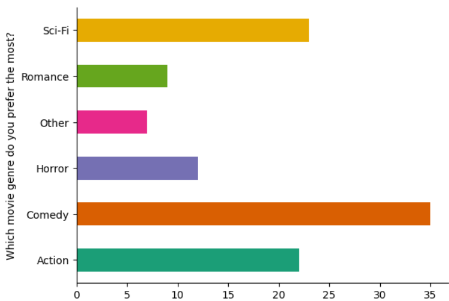
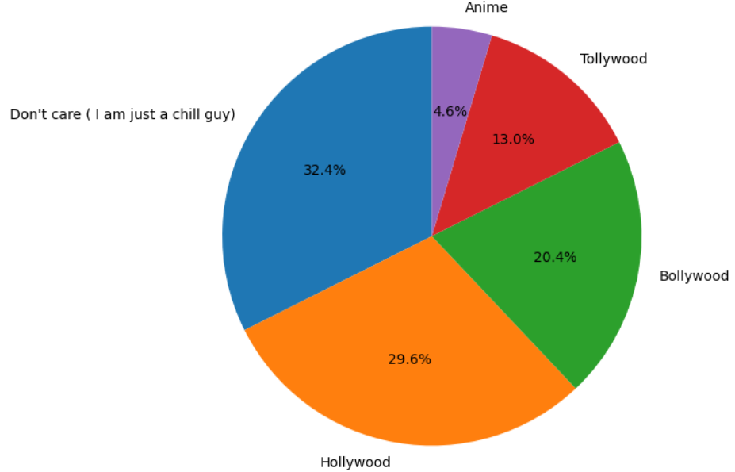
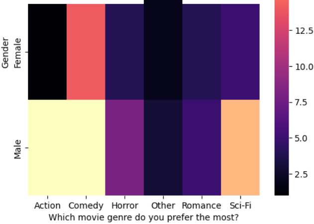

Mota Bhai's Case Study
(A detailed analysis of Movie Preferences in the Locality of IIT Bhilai)
Mota Bhai, a movie enthusiast and a big businessman with money as his biggest motivation, is keen on understanding the preferences of moviegoers in his locality so as to decide which type of movies he should put up in his "Emperial Cinema Hall". He conducts a survey among a diverse group of respondents in IIT Bhilai to gather insights into their movie preferences. The survey collects data on various aspects, including preferred movie genres, movie lengths, and movie industries. Mota Bhai seeks to analyze the survey data to identify trends and patterns that can inform his recommendation platform.
Let's dive into the analysis and see what insights we can uncover! Below is the CSV file with the data that Mota Bhai collected:
Click here to download the CSV file1. Which Genre of movies should Mota Bhai screen in his Cinema Hall?
The bar plot illustrating the most preferred movie genres reveals that "Comedy" emerges as the clear favourite among respondents, followed closely by "Action" and "Thriller." "Sci-Fi" and "Romance" also garner significant interest, while genres like "Horror" and "Drama" receive comparatively lower preferences. This suggests a strong inclination towards light hearted and entertaining movies, with action and suspenseful elements also holding considerable appeal.
Hmmm... So Mota Bhai now believes that Comedy, Action and Sci-Fi genre movies will bring him huge profit through his cinema hall.
2. Well what should be the ideal Lengths of the movie?
The bar plot depicting preferred movie lengths demonstrates a preference for movies with a duration of "2-3 hours," indicating a desire for immersive and engaging cinematic experiences. A substantial portion of respondents also favour movies lasting "1-2 hours," suggesting a demand for shorter, more concise narratives. This highlights the importance of catering to both preferences by offering a variety of movie lengths to accommodate different viewing preferences.
Well Mota Bhai eventually decides he will feature movies which are in between 1.5-3 hrs so as to maximize his profit (even he is confused if he should even consider movies with length less than 2 hrs) :)

3. Which movie industries are prevelant among the viewers here?
The pie chart showcasing the distribution of preferred movie industries reveals that "Hollywood" overwhelmingly dominates the preferences, commanding a significant majority share. This signifies the global appeal and widespread recognition of Hollywood productions. "Bollywood" also holds a notable presence, indicating a considerable following for Indian cinema. Other industries, such as "Tollywood," "Kollywood," and "Other," represent niche preferences but still contribute to the overall diversity of movie choices.
This particular survey gives Mota Bhai an idea.... he will premiere some niche genre movies for only few times meanwhile he can focus on broader genre like Hollywood or Bollywood on a wider audience and most importantly avoid those koran movies as there are no viewers in the neighbourhood.....Money matters for him afterall .
4.Is there a Gender-Based Movie Genre Preferences nearby?
The heatmap illustrating gender-based movie genre preferences reveals interesting insights. While both males and females exhibit a shared fondness for "Comedy," "Action," and "Thriller," subtle differences emerge in other genres. Notably, "Romance" appears to be more favored by females, while "Sci-Fi" garners slightly higher preference among males.
Well, Mota Bhai now knows that he should screen more of Comedy, Action and Thriller movies as they are liked by more males and the Romance and Sci-Fi genre movies should be screened more as they are liked by more females...He also knows the fact that there are more males than females nearby sooo.... hahaha (money money smile)
5. Is it necessary to keep movies according to its duration?
The heatmap exploring the correlation between preferred movie genres and lengths provides further insights. A strong association is observed between "Action" and "Thriller" genres with movies lasting "2-3 hours," indicating a preference for longer, more immersive experiences within these genres. Conversely, "Comedy" and "Romance" tend to be favoured in shorter durations of "1-2 hours."
Therefore Mota Bhai has to now keep movies of 1-2 hrs but only for Comedy and Romance genres.... This analysis really saved him from missing out on a big bag of money phewww
So from the above conclusions that Mota Bhai made, he tried to implement those studies in the practical world in the form of his 'Emperial Cinema Hall'. Now what, he is earning multiple times better than what he would have been earning if he wouldn't have conducted the survey. Well Well Well... Mota Bhai and Money is a match made for generations and no one can separate them... Currently Mota Bhai is living very happily and living a lavish life with his family!
Thank you for going through Mota Bhai's Case Study. Hope you enjoyed it:)
Created by: Abhigyan Sharma (12340050)